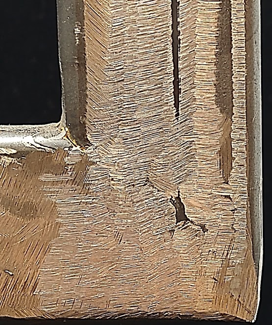
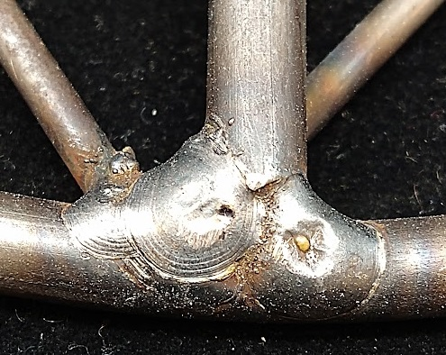
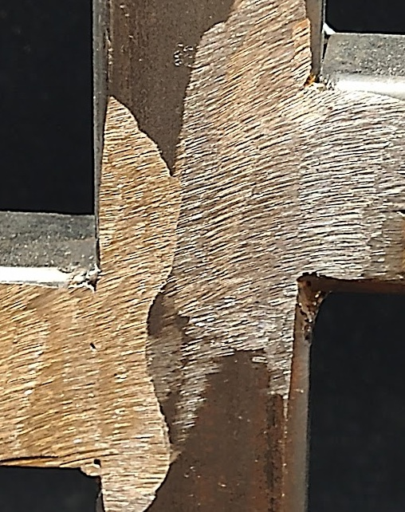
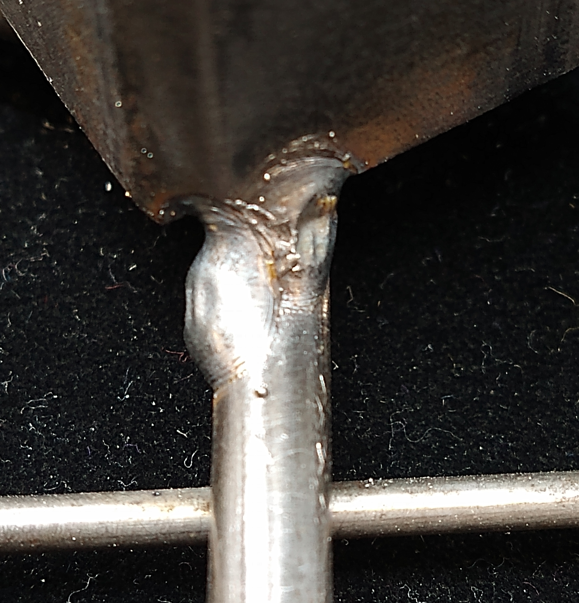
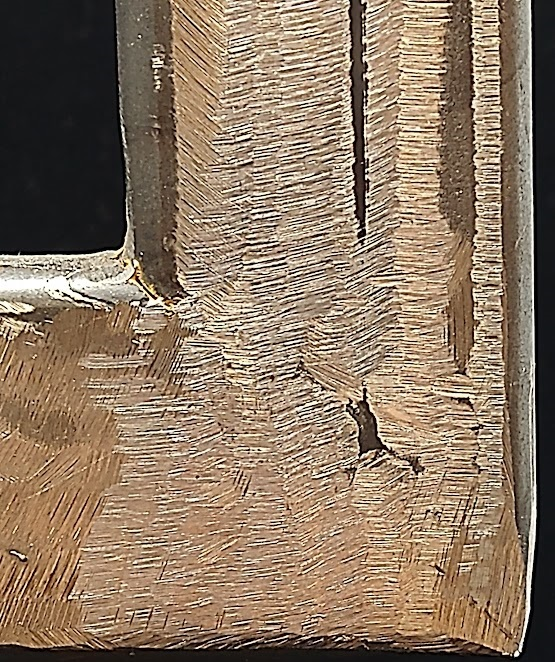
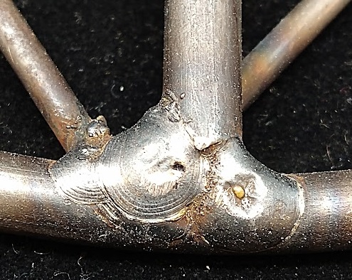
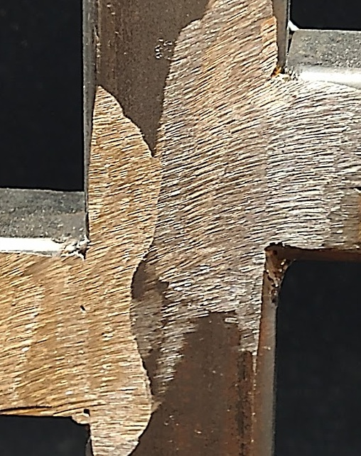
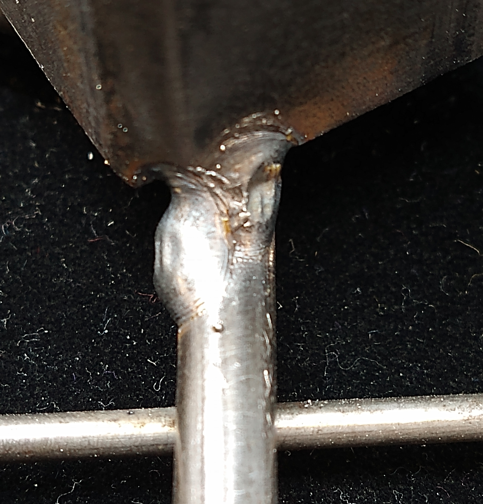
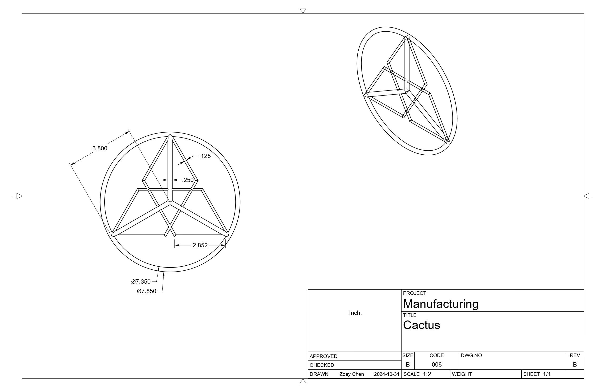

Cactus Project
Cactus Base: Material Preparation
➢ ⌀ 1⁄4" cut to 24" x1
➢ ⌀ 1⁄4" cut to
33⁄4" x3
➢ ⌀ 1⁄8" cut to 10" x3
Comments: Cutting some rods was fairly easy, and after cutting them
the ends were filed down for safety. The 3 1⁄4 cut to
33⁄4" were decided later after I realized that just the overlapping
diamonds couldn't support a cactus stem.
Cactus Base: Forming the Circle
➢ The 24" steel rod was bent into a circle using a bender tool.
➢ Tack welded the circle ends together
➢ Hammered the circle to be more circular
Comments: I wasn't strong enough to hammer the base to be more circular; thank you Mr.
Keller for helping out with that.
Cactus Base: Making the Inside Design
➢ Bent the ⌀ 1⁄4 twice at roughly 120° at 3" from
the ends
➢ Tack welded the ends to the circular base with the middles overlapping to form the
Ghostblood* symbol.
➢ After making sure the symbol looks good, applyed finishing welds
➢ Added in the supports trying to make sure they all end in the middle
Comments: The magnets were pretty useful for getting the material to stay in one place
to tack weld them together. I was fortunate in that I didn't have to hammer any of the pieces off
the base.
Cactus Arms: Material Preparation
➢ 1.5” by 1.5” by 1⁄8" Square Tubing cut to 3
3⁄4" at a 45° angle x4
Comments: The sections I used had there angle cut on the horizonatl bandsaw
Cactus Arms: Welding
➢ Using magnets the the tubing was set up at a 90° angle to each other by putting
the 45° angle sides together
➢ Tack welds were applied to one side
➢ A square was taken to the angle to make sure the arms weren't welded crooked
➢ If the arms aren't square than a hammer has to be applied to break the tack weld and
the tack weld may have to be grinded down for space to apply another tack weld
➢ After ensuring squareness, finishing welds are applied
➢ Finally, grind the welds off
Comments: I remember having to break the first arm apart a couple of times, but I
didn't have
to for the second one; so that's an improvement.
Cactus Stem: Material Preparation
➢ 1.5” by 1.5” by 1⁄8" Square Tubing cut to 10
1⁄2" x1
Comments:
Cactus Stem: Welding the Arms To the Stem
➢ Using magnets, the already welded arms should be welded to the stem such that every
angle is 90° and that the tubing walls are continuous
➢ In a similar process to getting the arms welded, if the arms are off, hammer them off
and try again
➢ Once the arms are in the correct position, finishing welds were applied then ground
off
Comments: Welding the arms to the stem actually took more attemps than welding the arms
together. For some reason, the the tack welds kept being tilted; this unfortunatly happened to both
arms multiple times.
Attaching the Stem to the Base
➢ Tack weld stem to base.
➢ Ensure the stem is square, use hammer as neccassary to square it.
➢ Apply finishing welds.
Comments: It was somewhat difficult getting the stem square since I couldn't use a
square to tell if the stem was square. This meant eyeballing it and hoping I got close enough, after
consulting people I finally felt confidant enough to apply the finishing welds.
*Ghostbloods are an organization from the Cosmere by Brandon Sanderson, their leader is Thaidakar and their symbol is based on the Marewill flower and every member (supposedly) has it tattooed somewhere on their body.